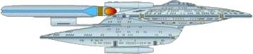

Flotta Stellare - Classe New Orleans |

| USS Kyushu NCC-65491 Distrutta dai Borg a Wolf 359. | The Best of Both Worlds - Part II | Kyushu è una delle quattro isole principali dell'arcipelago giapponese
su cui si trovano le rampe di lancio per i missili orbitali. Il modellino della Kyushu è stato disegnato da Ed Miarecki. |
| USS Renegade NCC-63102 Comandata dal Capitano Tryla Scott. | Conspiracy | |
| USS Rutledge NCC-57295 Comandata dal capitano Benjamin Maxwell. | The Wounded | Edward Rutledge fu uno dei 56 delegati che firmarono la Dichiarazione d'Indipendenza Americana, suo fratello John fu uno dei firmatari della Costituzione. La USS Edward Rutledge AP-52, un trasporto truppe, venne affondata il 12 novembre 1942 dall' U-130 insieme ad altre 2 navi, al largo di Fedala, oggi Mohammedia, Marocco. |
| USS Thomas Paine NCC-65530ST Fregata comandata dal Capitano Rixx. | Conspiracy | Thomas Paine è stato uno scrittore e un patriota americano. |